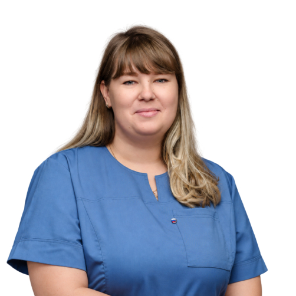
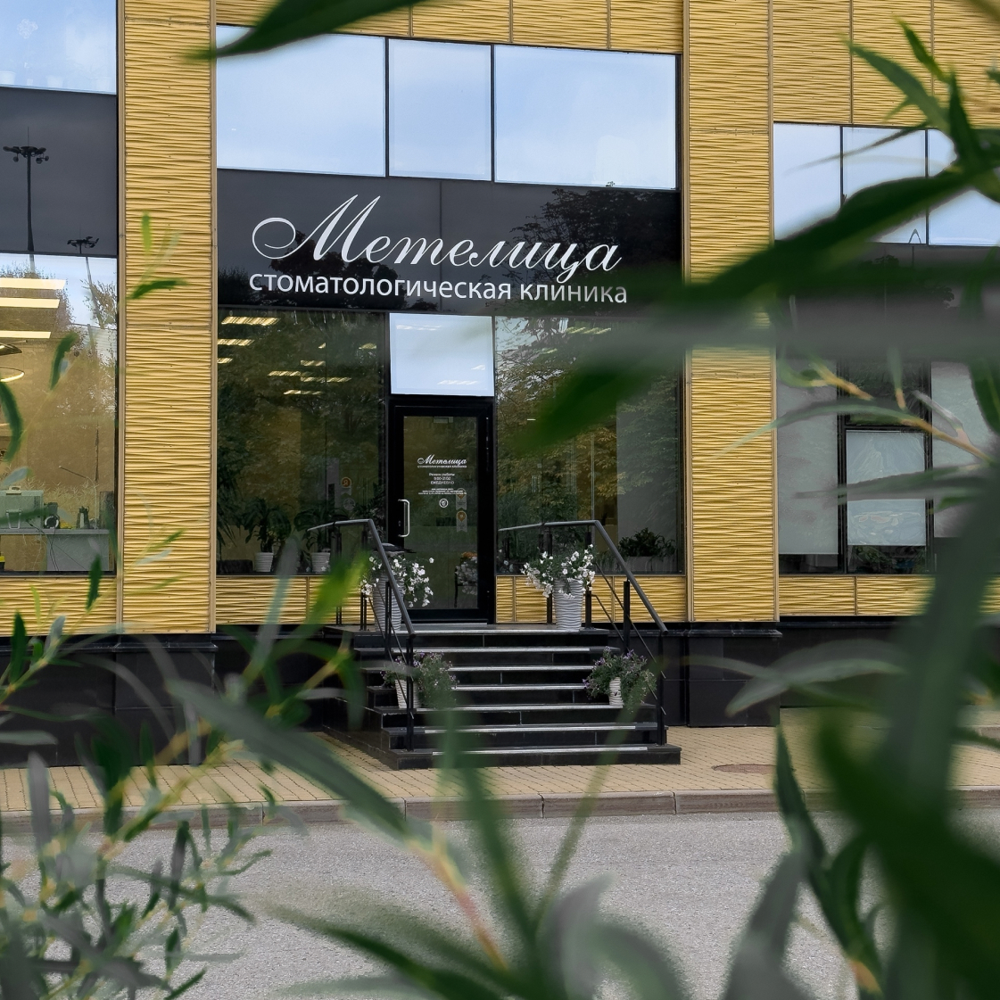
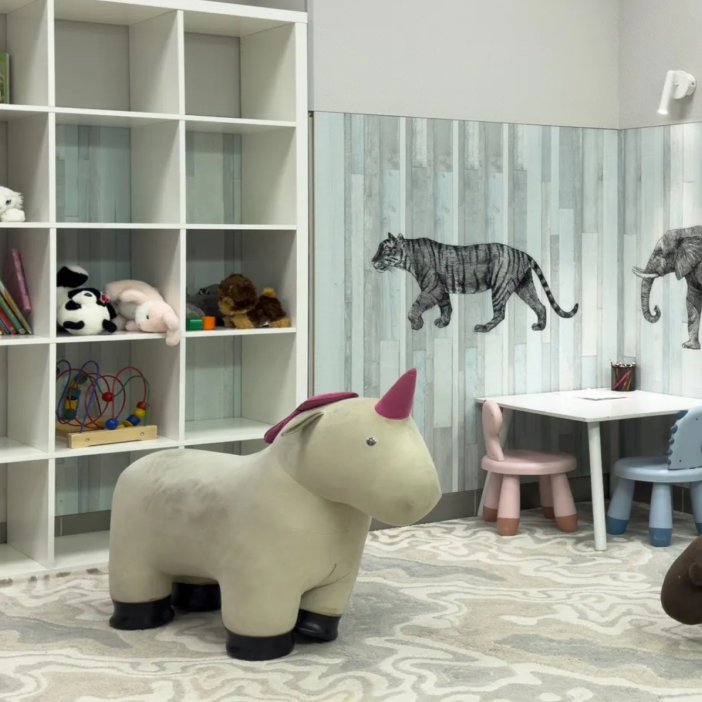
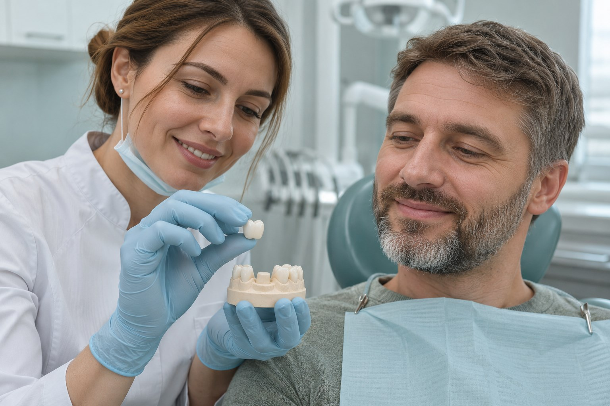
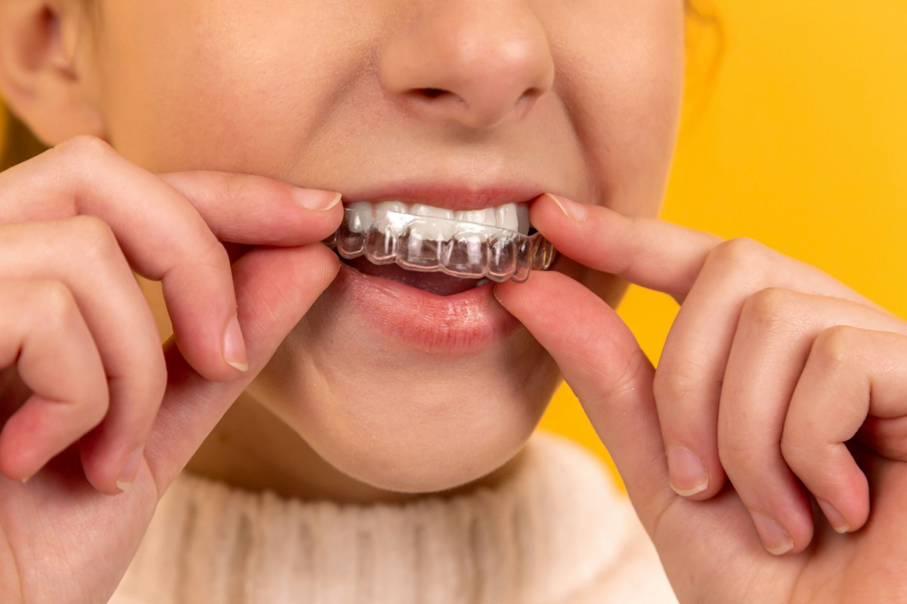
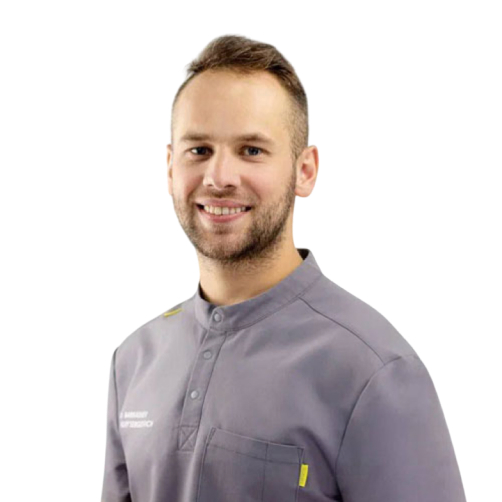
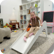
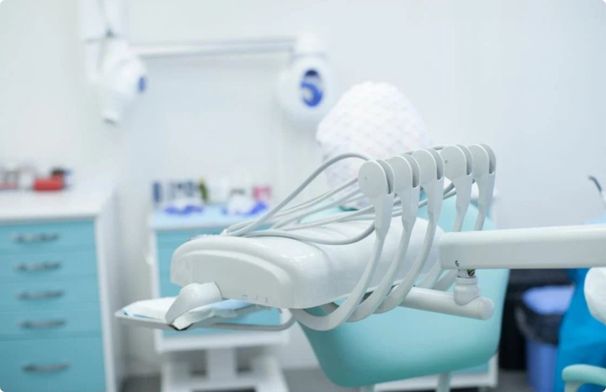
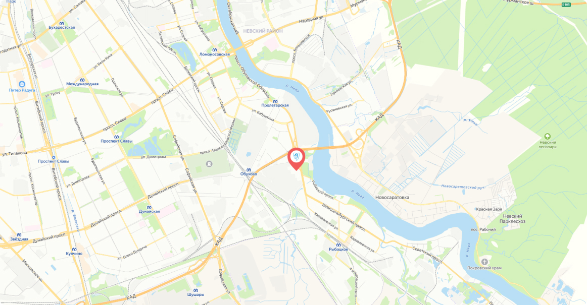

записаться к врачуСизонец Александра
Главный врач, терапевт, хирург
Работаем с 9 до 21
info@metelitsa-dent.ru


Мы знаем, что каждый приходит со своими ожиданиями и переживаниями, поэтому уделяем внимание не только результату лечения, но и тому, как проходит сам приём






записаться к врачуГлавный врач, терапевт, хирург
Терапевт, хирург

записаться к врачуХирург
Терапевт, хирург
Главный врач, терапевт, хирург
Терапевт, хирург
Хирург
Главный врач, терапевт, хирург
Пришли с сыном на первый приём и очень переживали, как всё пройдёт. Врач сначала познакомилась с ребёнком, показала инструменты и рассказала, что будет делать. Никто не торопил и не уговаривал через силу. После осмотра нам подробно объяснили, какие зубы требуют внимания, составили план и ответили на вопросы. Особенно понравилось, что с ребёнком разговаривали спокойно и уважительно. На следующий визит он шёл уже без страха. Администратор помогла подобрать время после школы, а перед приёмом напомнила о записи. Для нашей семьи это оказалось очень важно: теперь поход к стоматологу перестал быть событием, к которому нужно готовиться целую неделю. Спасибо за заботу и терпение!

Очень уютная клиника и внимательная команда. Записалась на профессиональную гигиену: всё сделали аккуратно, рассказали об уходе дома и помогли подобрать щётку. После приёма осталось приятное ощущение заботы.
Долго откладывал лечение, поэтому на консультацию пришёл с большим списком вопросов. Врач внимательно выслушал, показал результаты осмотра и объяснил несколько возможных вариантов. Мы обсудили сроки, порядок посещений и стоимость каждого этапа. Мне было важно понимать, что происходит, и здесь я получил понятные ответы без сложных терминов. Во время лечения врач предупреждал о каждом действии, спрашивал, удобно ли мне, и давал время отдохнуть. Записываться на следующие визиты было удобно, администраторы помогали подобрать время с учётом рабочего графика. Рад, что наконец решился заняться зубами и нашёл место, где чувствую себя спокойно.

Водим в «Метелицу» двоих детей. У каждого свой характер: старшая задаёт много вопросов, а младшему нужно время, чтобы освоиться. Врачи умеют найти подход к обоим. На приёме сначала всё показывают и объясняют, дают ребёнку почувствовать себя участником процесса. Нам подробно рассказали, как чистить зубы дома, на какие привычки обратить внимание и когда прийти на следующий осмотр. Очень нравится спокойная атмосфера без спешки. Можно задать любой вопрос и получить доброжелательный ответ. После посещения дети обсуждают не страх и боль, а то, какие интересные инструменты им показали. Для родителей это большая радость.
Удобно добираться от метро, запись прошла быстро. Приём начался вовремя. Врач объяснил план лечения и подробно ответил на мои вопросы. Вернусь на профилактический осмотр.
Обратилась по рекомендации подруги и осталась довольна знакомством с клиникой. С самого начала было комфортно: администратор рассказала, как пройти, а врач на консультации внимательно расспросила о том, что меня беспокоит. Мы обсудили мои ожидания и составили последовательный план. Во время приёма можно было спокойно уточнять детали, никто не торопил. Понравилось, что рекомендации по домашнему уходу были конкретными и понятными. После лечения мне ещё раз объяснили, на что обращать внимание и когда лучше прийти на контроль. Чувствуется, что здесь стараются сделать каждый визит удобным для пациента.
Проходил несколько этапов лечения и могу отметить хорошую организацию. Всё заранее обсудили, помогли подобрать даты, а изменения в расписании согласовывали со мной. Врач подробно объяснял, что уже сделано и какие шаги предстоят. На приёмах было спокойно, можно было сделать паузу и задать вопросы. Особенно ценю внимательное отношение к деталям: перед началом уточняли самочувствие и комфорт, после рассказывали о рекомендациях. Теперь регулярно прихожу на осмотры и не откладываю их, как раньше. Спасибо всей команде за терпение и понятное общение.
Приятно, когда в клинике помнят о твоих пожеланиях. Посещала врача несколько раз, и каждый приём проходил спокойно и последовательно. На консультации подробно разобрали мои вопросы, показали, что требует лечения, а что достаточно наблюдать. Мне понравилось, что план можно было обсудить и выбрать удобный темп. В кабинете чисто и уютно, администраторы доброжелательные. Отдельное спасибо за рекомендации по уходу: врач не просто перечислила средства, а объяснила, как ими пользоваться. После визита осталось ощущение, что о моём комфорте действительно позаботились.
Да, сообщите администратору, к какому специалисту хотите попасть. Вам помогут подобрать свободное время.
Да. Позвоните нам по номеру +7 931 399 05 80, и администратор подберёт другое удобное время. Пожалуйста, предупредите нас заранее.
Условия приёма зависят от вашей страховой программы. Свяжитесь с администратором: мы поможем уточнить возможность лечения по вашему полису.
Да, вы можете оформить социальный налоговый вычет за лечение. Администратор расскажет, какие документы нужны, и подготовит справку.
Решение о восстановлении зуба коронкой врач принимает после диагностики. На консультации мы объясним показания, этапы лечения и подходящие материалы.
